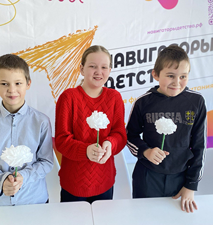
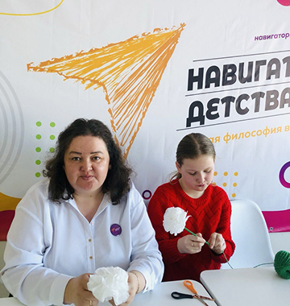
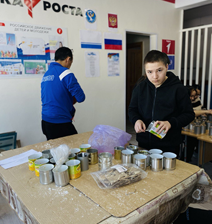
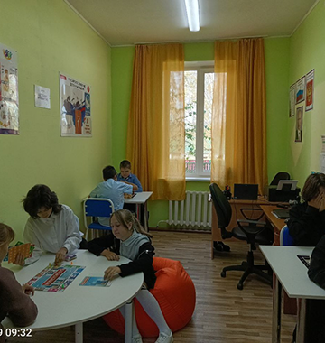

ПУБЛИКАЦИИ
МАТЕРИАЛЫ И СТАТЬИ ТОНДОШЕНСКОЙ ООШ

ДЕТСКИЕ ИНИЦИАТИВЫ И ТВОРЧЕСТВО
ШКОЛЬНЫЙ АЛЬМАНАХ: ЖИЗНЬ НАШЕЙ ШКОЛЫ 2023
Сборник, в котором собраны самые яркие моменты из жизни школы. Здесь можно найти заметки о прошедших праздниках, интересные фотографии с внеклассных занятий, а также рисунки и творческие работы наших ребят.

ИТОГИ УЧЕБНОГО ГОДА
ФОТОАЛЬБОМ ШКОЛЬНОЙ ЖИЗНИ 2023
В этом издании собраны самые яркие моменты из жизни нашей школы за прошедший год. Здесь можно посмотреть фотографии с линеек, классных часов, спортивных соревнований и обычных школьных будней. Издание будет интересно ученикам, их родителям и выпускникам.
5 СТРАНИЦ, ЦВЕТНЫЕ ИЛЛЮСТРАЦИИ
ПРОЕКТЫ И ВНЕУРОЧНАЯ ДЕЯТЕЛЬНОСТЬ
КОПИЛКА ДОБРЫХ ДЕЛ НАШЕЙ ШКОЛЫ
Сборник рассказывает о школьных акциях, конкурсах и полезных инициативах, в которых принимали участие наши ученики. Это отчет о том, как ребята вместе с учителями помогали школе, участвовали в субботниках и делали жизнь интереснее.

ВНЕУРОЧНАЯ ДЕЯТЕЛЬНОСТЬ
КЛУБ НАСТОЛЬНЫХ ИГР «ХОД КОНЕМ» 2023
В этом издании собрана информация о работе нашего школьного клуба настольных игр. Здесь можно найти фотографии с прошедших игротек, обзоры новинок и расписание встреч. Клуб открыт для всех учеников, которые хотят интересно провести время, научиться стратегически мыслить и найти новых друзей.